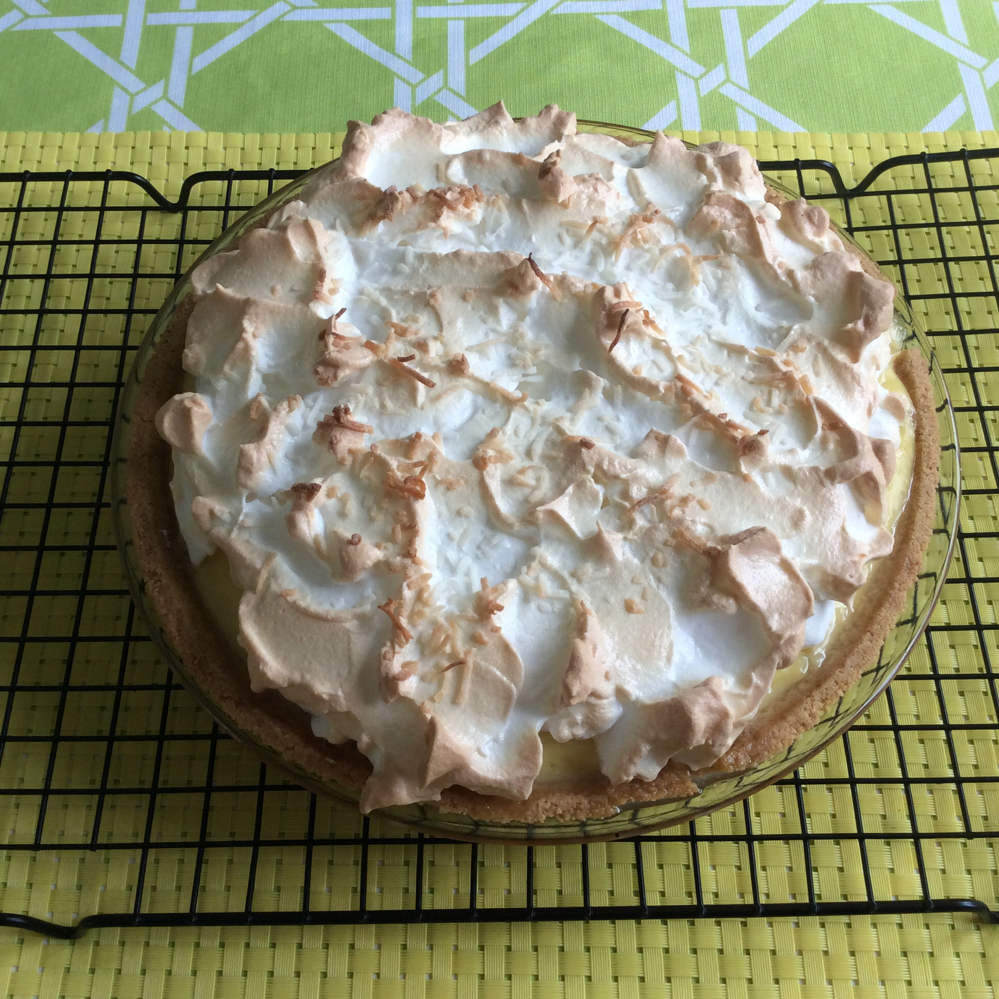

Coconut Cream

Description
A rich, wonderful dessert. Garnish each slice with whipped cream if you like. You can use nonfat milk in this recipe to cut down on calories a little.
Ingredients
- 1 (9 inch) pie crust, baked
- ⅔ cup white sugar
- ¼ cup cornstarch
- ½ teaspoon salt
- 3 cups milk
- 4 egg yolks, beaten
- 2 tablespoons butter, softened
- 4 teaspoons vanilla extract
- 1 cup shredded coconut
Steps
- In a large saucepan, combine sugar, cornstarch, and salt. Mix well, then slowly whisk in milk and egg yolks. Cook over medium heat, stirring constantly, until mixture thickens and boils. Boil and stir 1 minute. Remove from heat.
- Stir butter or margarine and vanilla extract into mixture. Add shredded coconut and mix thoroughly. Pour immediately into pie shell. Chill at least 2 hours before serving. Garnish with whipped cream.
Go back